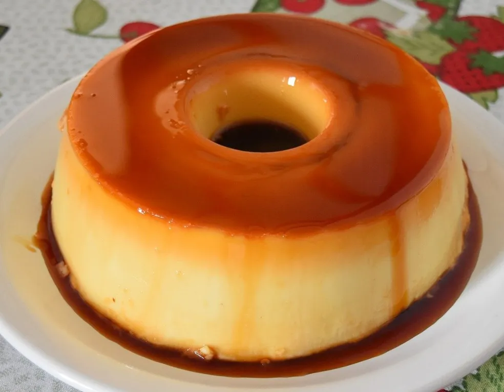

Pudim de Leite Condensado

Uma das sobremesas mais tradicionais, o clássico pudim de leite condensado é uma das
sobremesas mais fáceis de se preparar. Confira a receita!
Autor: Luiz David
Tempo de preparo: 5 a 10 mins
Rendimento: 8 porções
--------------- Para a calda --------------
Ingredientes:
- 1/2 xícara (chá) de açúcar
- 1/2 xícara (chá) de água
Modo de Preparo:
- Use uma forma redonda de 22 cm de diâmetro com um furo no meio. Misture os ingredientes na forma previamente antes de levar ao fogo.